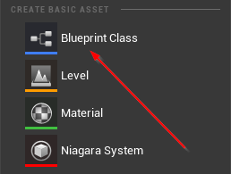
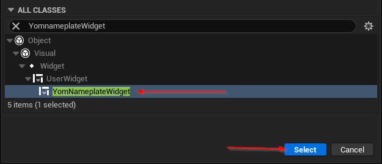
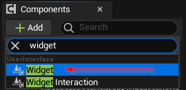
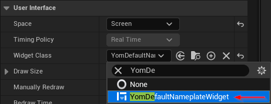
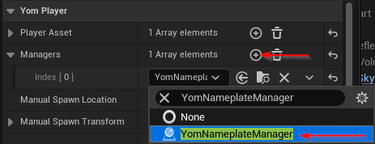

- Generated by
 1.9.5
1.9.5
|
YOM Replicator SDK 0.5.0.21
A metaverse SDK created by YOM
|
The Your Open Metaverse plugin allows creators to design their own nameplates. This guide will explain how to create and use your own nameplates with our ecosystem. If you just want to use our default nameplates, but it has not been enabled yet on your character you can move to Step 2 and use the YomDefaultNameplateWidget as your widget.
To create a custom nameplate you will have to create a new blueprint asset. Right-click in a folder in the Content Browser and under Create Basic Asset click on Blueprint Class.

This will open up the blueprint dialog box in which you can search for YomNameplateWidget. Once you find the YomNameplateWidget select it.

You can now customize your nameplate as you like, but one of the widgets must be a TextBlock widget with the name WalletID. In this TextBlock the walletID of the players will be printed when they are loaded into the game. Also give this walletID block a nice default name like Unknown for when the nameplate could not be loaded.
Open up your character (this is not your MetaspacePlayer, but the character that the players will use to move around with) and under the Components tab add a Widget component.

Give this widget a nice name like Nameplate and select it. Under the Details -> User Interface -> Widget Class you can set your widget.

Tip: If you want the widget to always face the player, change Space from World to Screen.
In the Viewport tab, set the nameplate to the desired position for your character.
The nameplates will only work when you tell your MetaspacePlayer to load the YomNameplateManager in your game on startup. Go to your MetaspacePlayer and under Details -> Yom Player -> Managers add an element and insert YomNameplateManager.

You should now be able to see a nameplate when you spawn into the game.